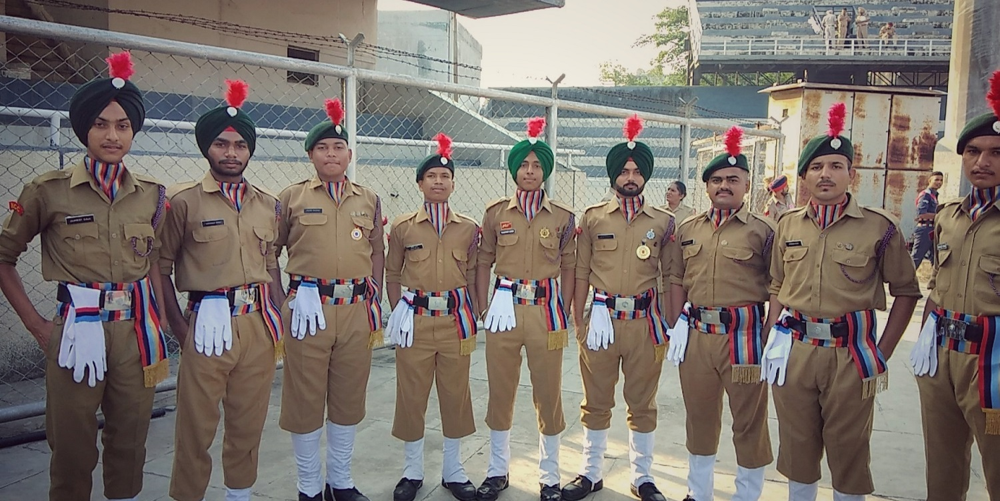
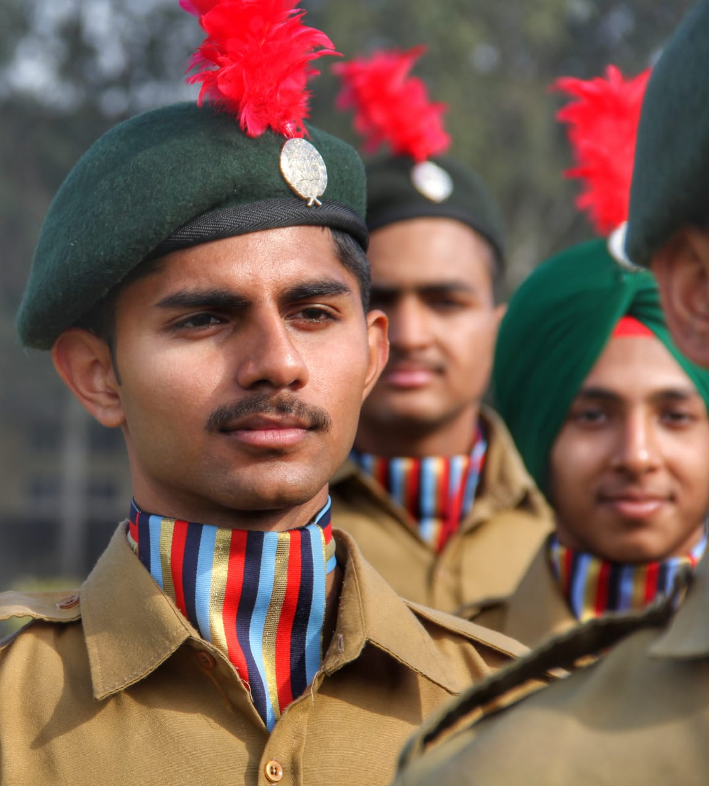
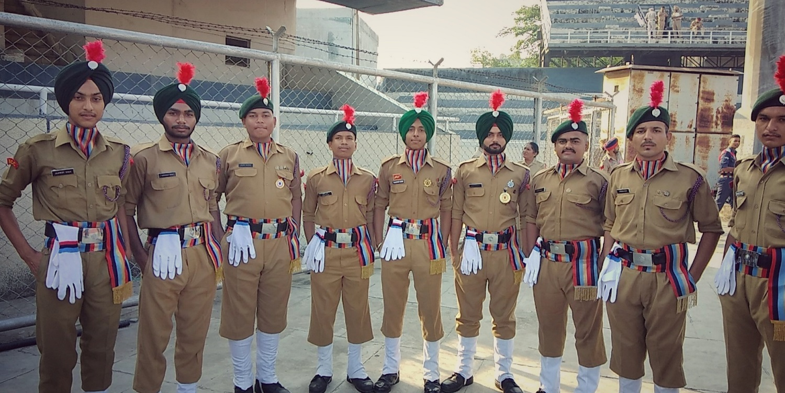
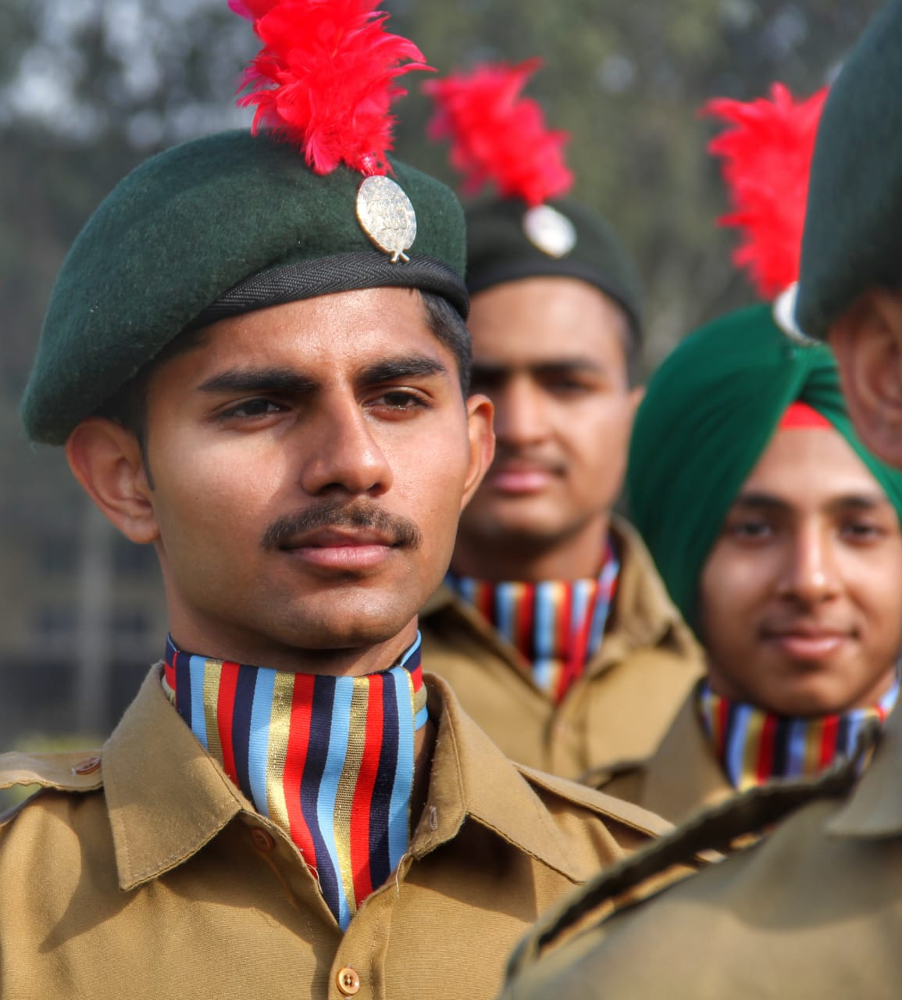

The ‘Aims’ of the NCC laid out in 1988 have stood the test of time and continue to meet the requirements expected of it in the current socio–economic scenario of the country. The NCC aims at developing character, comradeship, discipline, a secular outlook, the spirit of adventure and ideals of selfless service amongst young citizens. Further, it aims at creating a pool of organized, trained and motivated youth with leadership qualities in all walks of life, who will serve the Nation regardless of which career they choose. Needless to say, the NCC also provides an environment conducive to motivating young Indians to join the armed forces.
To Create a Human Resource of Organized, Trained and Motivated Youth, To Provide Leadership in all Walks of life and be Always Available for the Service of the Nation.
To Provide a Suitable Environment to Motivate the Youth to Take Up a Career in the Armed Forces.
To Develop Character, Comradeship, Discipline, Leadership, Secular Outlook, Spirit of Adventure, and Ideals of Selfless Service amongst the Youth of the Country.
 



The Cadet Corps Committee which was formed on 29 Sep 1946 with Pt HN Kunzru as chairman held six meetings in South Block, New Delhi. At the same time, Pt HN Kunzru formed sub-committees which were sent on study tours in all the main provinces of pre-independent India including provinces which are now located in Bangladesh and Pakistan. One sub-committee was also sent on tour to Great Britain and France from 15 Feb 1947 to 31 Mar 1947 to study the Youth and Cadet organisations in those countries.
The Cadet Corps Committee carried out exhaustive study of the problem of youth in India. Its sub-committees after their tour at home and abroad submitted their report to the Govt of India in Mar 1947. Soon after the report was submitted, a far reaching political development began to impact the country, due to which the Cadet Corps Scheme had to be kept in abeyance. The religious strife which then was at its zenith, ultimately led to the partition of the country into India and Pakistan.
On the stroke of midnight of 14/15 Aug 1947, India achieved her independence. Immediately after independence, India was confronted with problems of formidable magnitude concerning not only repatriation of millions of displaced persons from Pakistan but also a full scale invasion of Kashmir by the Armed tribesmen supported by Pakistan. The armed forces had to rush to retrieve Kashmir at a time when they were already pre-occupied with the internal problem of maintaining law and order during the country's initial stage of consolidation.
The war in Kashmir and the consequent loss of a portion of Indian territory; the open support of Western Powers to Pakistan in the Security Council of the United Nations, made it more than evident to the Indian leaders that they not only had to strengthen the Armed Forces but also create sufficient strength of reserves, who could take up arms, when required. The gravity of time and event found expression in the Indian Legislature through anxious and pressing demand for military training of young men and women throughout the country.
Birth of the National Cadet Corps
The Kashmir War of 1948 taught a very important lesson to India, that freedom needs to be protected by strong Armed Forces. Its immediate manifestation was that the recommendations of Kunzuru committee were placed before the Constituent Assembly (Legislature) on 13 Mar 1948. A draft Bill was sent to the Constituent Assembly (Legislative) on 19 Mar 1948, which evoked great interest and enthusiasm amongst all members. After due deliberations and amendments, the Bill was passed by the Assembly on 08 Apr 1948. The Central Govt accepted the opinion of the Provincial Govts and the Standing Committee's recommendations for the formation of a Cadet Corps which was to be named as "National Cadet Corps", as recommended by the Kunzuru Committee.
The Bill received the assent of the Governor General on 16 Apr 1948, and the National Cadet Corps came into being by an Act of the Parliament Act No. XXXI of 1948 designated 'The National Cadet Corps Act 1948'. This Act with 13 clauses, prescribed the formation of the National Cadet Corps in India.
The first step in the process of raising of the NCC was setting up of the NCC Secretariat now called Headquarters Directorate General NCC. In fact, even before the NCC Bill was passed by the Constituent Assembly (Legislative), the Ministry of Defence had set up the nucleus of the NCC Secretariat, with Col (later retired as Chief of Army Staff) Gopal Gurunath Bewoor as first Director of the NCC. He took over as Director of NCC on 31 Mar 1948.

Then Colonel (later Chief of Army Staff) GG Bewoor. First Director (now called Director General) of NCC
The need for having motto for the Corps was discussed in the 11th Central Advisory Committee (CAC) meeting held on 11 Aug 1978. The mottos suggested were "Duty and Discipline"; "Duty, Unity and Discipline"; "Duty and Unity"; "Unity and Discipline". The final decision for selection of "Unity and Discipline" as motto for the NCC was taken in the 12th CAC meeting held on 12 Oct 1980.
The NCC is a responsive, learning and continuously evolving organization. Its activity is guided by certain core values that we endeavour to instill among all ranks of the NCC. These include the following:
(a) A sense of patriotic commitment to encourage cadets to contribute to national development.
(b) Respect for diversities in religion, language, culture, ethnicity, life style and habitat to instill a sense of National unity and social cohesion.
(c) Abiding commitment to learn and adhere to the norms and values enshrined in the Indian Constitution.
(d) Understanding the value of a just and impartial exercise of authority.
(e) Ability to participate in community development and other social programme.
(f) A healthy life style free of substance abuse and other unhealthy practices.
(g) Sensitivity to the needs of poor and socially disadvantaged fellow citizens.
(h) Inculcating habits of restraint and self-awareness.
(i) Understanding the values of honesty, truthfulness, self-sacrifice, perseverance and hard work.
(j) Respect for knowledge, wisdom and the power of ideas.
WE THE CADET OF THE NATIONAL CADET CORPS,
DO SOLOEMNLY PLEDGE THAT WE SHALL ALWAYS UPHOLD THE UNITY OF INDIA.
WE RESOLVE TO BE DISCIPLINED AND RESPONSIBLE CITIZEN OF OUR NATION.
WE SHALL UNDERTAKE POSITIVE COMMUNITY SERVICE IN THE SPIRIT OF SELFLESSNESS
AND CONCERN FOR OUR FELLOW BEINGS.
The NCC flag for various units of the NCC was first introduced in 1951. The flag was of same pattern, colour and size as was used by various regiments of the Army. The only difference was that it had the NCC badge and unit designation placed in the centre. Later on it was felt that the flag should be in keeping with the inter-service character of the Corps. In 1954 the existing tricolour flag was introduced. The three colours in the flag depict the three services of the Corps, red for the Army, deep blue for the Navy and light blue for the Air Force. The letters NCC and the NCC crest in gold in the middle of the flag encircled by a wreath of lotus, give the flag a colourful look and a distinct identity.

History Of NCC Song
The desirability of composing a NCC song was considered in the Circle Commanders (now called DDGs) Conference held in January 1956 and all circles were asked to send their proposals. The official song of the NCC - "Kadam Mila Ke Chal" was adopted in 1963, and registered in 1969 with the approval of the Ministry of Defence. In 1974, it was felt that the NCC song had failed to catch the imagination of the youth, and there was a need for a change. A sustained process began; entries were invited from Directorates for suitable lyrics; 107 entries were received; of which eight were selected by a Board of Officers. However, all the eight were considered sub standard by Dr Nagendra of Delhi University, who was the judge. On the suggestion of Dr Nagendra, the task was entrusted to Shri Chiranjit, the Chief Producer, Drama Division, AIR, Delhi.
The song written by Shri Chiranjit was approved, in 1976. The Maharashtra Directorate was asked to get the song composed and recorded with the help of Shri Raj Kapoor, and the Films Division, Bombay. However, nothing much came out of this exercise as Shri Raj Kapoor was then busy in making his film "Satyam Shivam Sundaram" and the studios of the Films Division were under renovation. Later, Shri Mahinder Singh Bedi, a well known poet of Delhi, was requested to write another song. This effort also proved infructuous. AEC Centre Pachmarhi was also approached, but somehow the matter could not be finalized.
NCC Song Lyrics
Hum Sab Bharatiya Hain, Hum Sab Bharatiya Hain Apni Manzil Ek Hai, Ha, Ha, Ha, Ek Hai, Ho, Ho, Ho, Ek Hai. Hum Sab Bharatiya Hain.
Kashmir Ki Dharti Rani Hai, Sartaj Himalaya Hai, Saadiyon Se Humne Isko Apne Khoon Se Pala Hai Desh Ki Raksha Ki Khatir Hum Shamshir Utha Lenge, Hum Shamshir Utha Lenge.
Bikhre Bikhre Taare Hain Hum Lekin Jhilmil Ek Hai, Ha, Ha, Ha, Ek Hai Hum Sab Bharatiya Hai.
Mandir Gurudwaare Bhi Hain Yahan Aur Masjid Bhi Hai Yahan Girija Ka Hai Ghariyaal Kahin Mullah ki Kahin Hai Ajaan
Ek Hee Apna Ram Hain, Ek hi Allah Taala Hai, Ek Hee Allah Taala Hain, Raang Birange Deepak Hain Hum, lekin Jagmag Ek Hai, Ha Ha Ha Ek Hai, Ho Ho Ho Ek Hai. Hum Sab Bharatiya Hain, Hum Sab Bharatiya Hain.